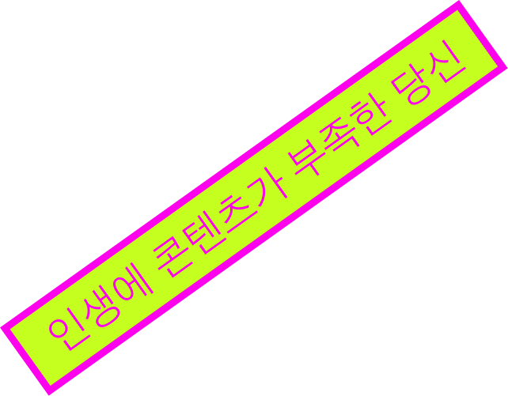
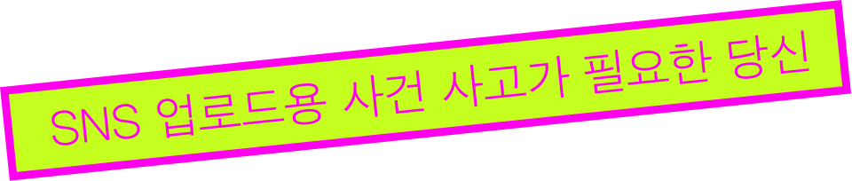
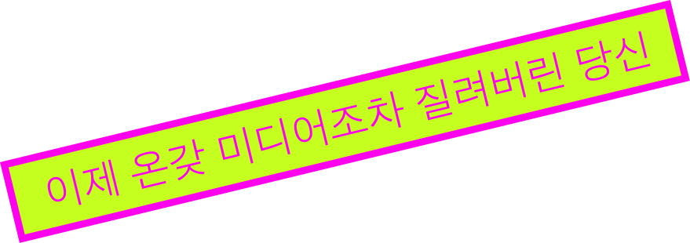
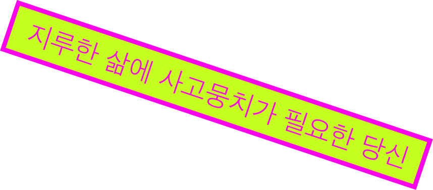
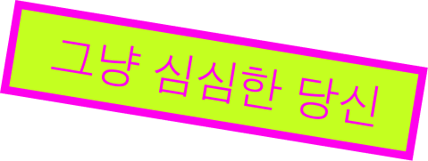

이런 당신의 인생에 조금의 고생과 재미를, 인생의 이스터에그가 되어줄 물건들을 소개합니다.
이스터 샵의 시작은, 이스터에그의 의미를 우리 삶에 적용해서 잃어버렸던
순수함에 대해 생각해보고 싶다는 생각부터였어요.
이스터에그의 의미가 궁금하다면 EGG라고 적힌 인덱스를 눌러보세요.
다시 돌아와서, 이스터 샵에는 여러가지 이스터에그들이 당신을 기다리고 있습니다.
절찬리에 할인하고 있으니, 일상에 이스터에그를 직접 더해보세요.
이스터에그는 셀프!
홈 화면의 스크롤을 내리면, 이스터 샵의 물건들과 함께하는 하루는 어떨지
미리 체험해볼 수 있습니다.
우선 읽 보시는 것을 추천드립니다.
결정은 체험을 해본 뒤에 해도 늦지 않으니까요!
하지만 구매할 생각이 아니어도 구경하고 가세요.
이 웹사이트 속의 이스터에그를 찾아 눌러보면 무언가 재미있는 일이 일어날지도 몰라요.